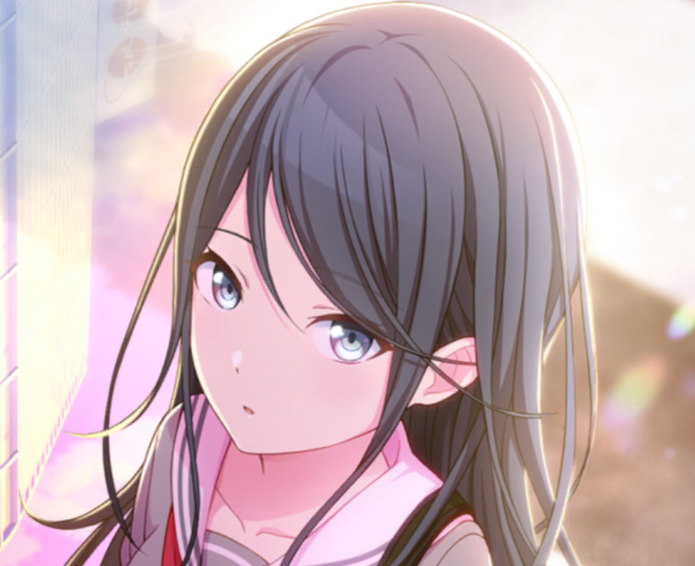

1. Ichika

- Desde pequena, ela sempre foi fã da Hatsune
- Ela é a guitarrista da banda
- Ela ainda acredita no Papai Noel
- Ela tem uma habilidade secreta que pratica como um hobbie: descascar maçãs em uma tira sem quebrá-la
- Uma vez, ela passou uma tarde inteira aperfeiçoando um riff de guitarra inspirado em um vídeo de show da Miku que ela assistia obsessivamente.
- Além de cuidar de seus cactos, ela é muito conhecedora de flores e seus significados
- Ela não tem conhecimento de quais músicas são consideradas "populares" ou modernas, pois ela só ouve músicas relacionadas à Miku
- Ela está em uma comunidade online dedicada a pães de yakisoba (eu nem sabia que isso existia)
2. Saki
3. Honami
4. Shiho
5. Minori
6. Haruka
7. Airi
8. Shizuku
9. Kohane
10. An
11. Akito
12. Toya
13. Tsukasa
14. Emu
- Ela é uma das únicas personagens que consegue ver fantasmas, junto com a Mafuyu e Shizuku
- Ela é a personagem mais rica entre os personagens jogáveis
- Ela é a personagem mais baixa do jogo
- Ela é filha do dono de um parque de diversões: Phoenix Wonderland
- Ela tem uma audição muito boa
- Seu traje casual é uma versão modificada do uniforme da Phoenix Wonderland
- Foi ela quem sugeriu o nome do seu grupo (Wonderland × Showtime)
- Ela é academicamente e emocionalmente inteligente, conseguindo indentificar o sorriso falsa da Mafuyu
- Continuando no assunto do sorriso Mafuyu, o sorriso falso da Mafuyu dá medo na Emu
- Ela é muito atlética e é capaz de pular de dois andares sem se machucar, bem como pular sobre Tsukasa enquanto ele está de pé
15. Nene
16. Rui
- Ele é o personagem mais alto do jogo, tendo 1,82 metros
- Ele ODEIA legumes, vegetais e frutas que têm textura parecida com vegetais, como melância
- Ele ama robótica e já criou diiversos robôs, como a nene-robo, feita para auxiliar os shows do seu grupo
- Seu quarto é muito bagunçado e diferente dos demais quartos, pois serve como uma oficina dele e ele não gosta de limpar
- Seu quarto antigamente era uma garagem
- A mãe dele é biologa e o pai dele é um engenheiro robótico, o que influenciou um pouco o seu amor por criação de robôs
- Ele é o diretor do Wonderland x Showtime
- Seu elemento/emoji representativo é o balão, porque um dos hobbies dele é a arte de balão
- É o personagem que tem mais polêmicas em seus eventos, como uma música removida, evento cancelado no servidor global e MV removido
17. Kanade
18. Mafuyu
19. Ena
20. Mizuki
- A roupa da nene-robo e de alguns figurinos do WxS foram feitas por ela